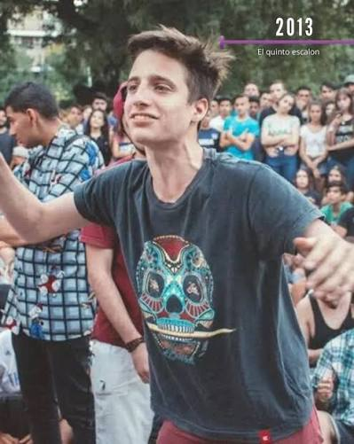
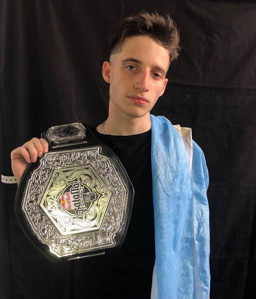
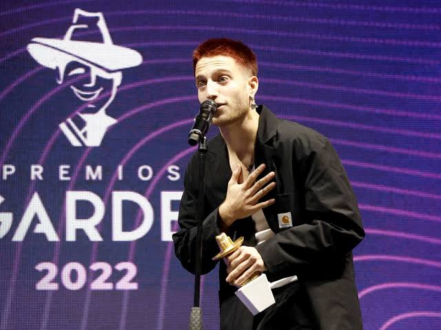

WOS MUSIC

ETAPAS CLAVE DE SU CARRERA

El Quinto Escalon
Sus inicios en la plaza San Jose de Flores, donde se consagro como uno de los freestylers mas destacados.

Campeon Internacional
Consagración en la Red Bull Batalla de los Gallos 2018, coronándose campeón del mundo en Argentina.
Paso a la Musica
El salto a los estudios con hits como Purpura y Canguro, marcando el inicio de su carrera solista.

Premios y Gardel de Oro
Reconocimiento de la critica y del publico, ganando multiples premios Gardel por sus albumes.